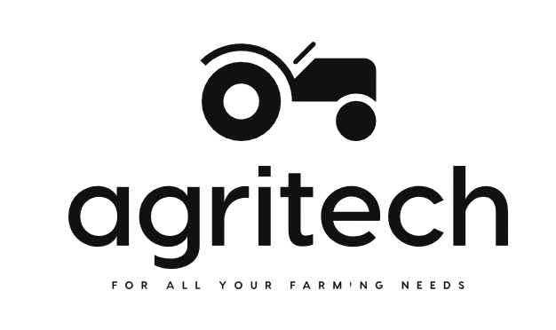

🌾

Agrismart
Home
Predict
Dashboard
Login
🌿 Farm Dashboard
Real-time conditions and insights for your farm — updated live
🌾 Predict Crop
🧪 Fertilizer Advice
📚 Knowledge Hub
🔄 Refresh Weather
🌡️
🌡️
Air Temperature
--°C
Fetching...
📍 Detecting location...
💧
💧
Humidity
--%
Optimal range: 50–80%
🌧️
🌧️
Precipitation
-- mm
Checking...
🌱
🌱
Soil Moisture
72%
↑ High — Good
🗺️ Farm Location
📍
Detecting your location...
Allow Location Access
📊 Monthly Yield Trend (Projected)
Jan
Feb
Mar
Apr
May
Jun
Jul
Aug
Sep
Oct
Nov
Dec
🧪 Soil Nutrient Levels (Current)
Nitrogen (N)
74 kg/ha
Phosphorus (P)
45 kg/ha
Potassium (K)
62 kg/ha
Soil pH
6.8
Get crop recommendation →
💡 Smart Farming Tips
With current humidity levels, consider reducing irrigation frequency by 20% this week.
Soil pH of 6.8 is ideal for wheat and paddy. Consider these crops for next season.
Nitrogen levels are slightly below optimal — consider applying urea at 30 kg/ha.
Monitor for fungal disease in high-humidity conditions above 80%.
Best planting window for your location: August–September for Rabi crops.
🌾 Crop Reference Library
🌾
Wheat
N:26% · P:34% · Fats:10%
🌾
Rice
High humidity · pH 5–7
🌽
Maize
Warm · 60–110mm rain
🎋
Sugarcane
Tropical · High K
🌸
Cotton
Black soil · pH 6–8
🫘
Pulses
Low N needed · Loamy